“
交易系统是命根子，为什么这家传统券商选择将其全部容器化？本文根据梁启鸿在InfoQ举办的CNUTCon2016全球容器技术大会上的演讲整理而成。
老司机简介
梁启鸿，广发证券研发董事总经理首席架构师。哥伦比亚大学计算机科学系毕业，出道于纽约IBM T.J. Watson研究院，后投身华尔街，分别在纽约Morgan Stanley、Merrill Lynch和JP Morgan等投行参与交易系统研发。
本世纪初加入IT界，在Sun Microsystems大中华区专业服务部负责金融行业技术解决方案。此后创建游戏公司并担任CTO职位5年。后作为雅虎Senior Principal Architect加入雅虎，担任北京研究院首席架构师角色。
前言
前一段时间中国银监会在“十三五”规划当中提到银行业应该稳步实施架构迁移并逐步过渡到云计算架构平台，广发证券在这方面做了很长时间的探索。
广发证券于2014年Docker等容器技术尚未盛行之时开始投入容器化技术的研究，并于2015年开始大规模投入应用―成交量六百亿（2015年）规模的金融电商平台、消息推送日均数千万条级别的社会化投顾问答平台以及日均流经交易量峰值近五十亿的交易总线均被容器化；投入生产的容器化云服务包括行情、资讯、消息推送、自选股、统一认证、实时事件处理等。
从《黑天鹅》说起
我们研究和应用云技术的动机，来源于对“黑天鹅”事件的应对。“黑天鹅”这一概念，是在美国学者、风险分析师、前量化交易员、前对冲基金经理塔勒布（Nassim Nicholas Taleb）的《黑天鹅》（The Black Swan �C The impact of the highly improbable）一书发表后在全球被得以高度认知。
在发现澳大利亚之前，17世纪之前的欧洲人认为天鹅都是白色的。但随着第一只黑天鹅的出现，这个不可动摇的信念崩溃了。黑天鹅的存在寓意着不可预测的重大稀有事件，它在意料之外并且后果非常严重。
一个黑天鹅事件，具有这三个特点：（1）稀缺、通常史无前例（rarity），（2）影响很极端（extreme impact），（3）虽然它具有意外性，但人的本性促使我们在事后为它的发生找到理由――“事后诸葛亮”，并且或多或少认为它是可解释和可预测的（introspective）。 IT系统、尤其是资本市场里的交易系统，所发生的各种重大问题，其实是很符合黑天鹅事件的特点的。
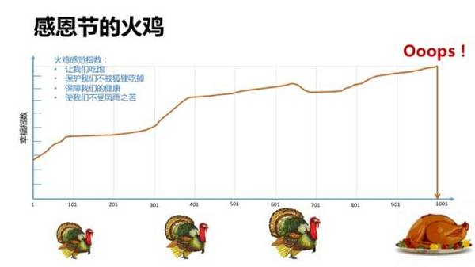
塔勒布用“感恩节的火鸡”很形象解释了黑天鹅的概念――直到被宰掉成为感恩节火鸡晚餐前的每一天，火鸡都应该是活的很不错的，它的一生里没有任何过去的经验供它预测到自己未来的结果，而后果是致命的。
一套复杂的IT系统，很有可能就是那只火鸡，例如就个人近年所遭遇的类似事件最典型的两次，一是与某机构对接的技术接口，据称已经存在并稳定使用近10年 �C 虽然技术古老但是从未出现问题，然而在过去两年持续创新高的交易量压力之下，问题终究以最无法想象到的方式出现并形成系统性风险（因为对接者不仅一两家）；
另一，则是老旧的系统因对市场可交易股票数目作了假设（而从未被发现），某天新股上市数量超过一定值而导致部分交易功能无法正常进行。
这两个例子都符合黑天鹅特征，一是“史无前例” （如果以前发生过，问题早就被处理了），二是可以“事后诸葛亮”（所有IT系统问题，最后不都可以归结为“一个愚蠢的bug” ？因为开发时需求不清楚、因为开发者粗心、因为技术系统所处的生态环境已经发生变化导致原假设无效）；
三是“后果严重”（如果技术系统本身是一个广被采购的第三方的商业软件，则整个行业都有受灾可能；如果是自研发的技术，则最起码对交易投资者造成灾难性损失）。
事实上，资本市场乃至金融业整体，可能都是黑天鹅最爱光顾的地方。甚至连普罗大众都听过的例子诸如：2010年5月6日的Flash Crash ――在三十分钟内道琼斯指数狂泻近千点、1987年10月19日的Black Monday、国内著名的“乌龙指”事件导致的市场剧动……不一而足。
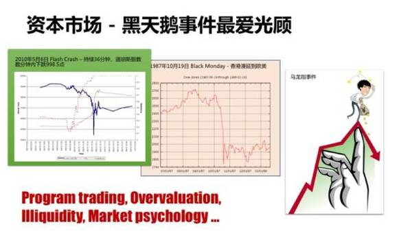
导致黑天鹅降临的原因，事后分析五花八门，可能是量化交易导致的、可能是市场流动性不足引起的、也可能是市场心理（例如恐慌抛售）触发的……无论何者，IT系统几乎都是最后被压垮的那只骆驼。正如塔勒布文章中提到，高盛在2007年8月的某天突然经历的为平常24倍的交易量，如果到了29倍，系统是否就已经坍塌了？
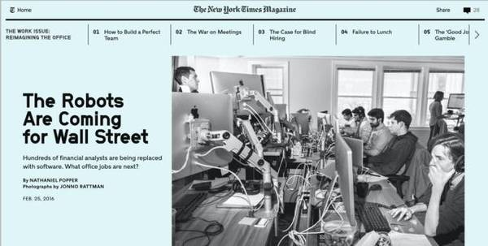
事实上，在这个日益数字化的世界，本身就高度数字化的证券市场，面临的黑天鹅事件会越来越多，出于但不仅限于以下一些因素：
增长的交易规模。
更高频、更复杂的交易算法（《高频交易员》一书里指出，股票市场已经变成机器人之间的战争）。
更全球化更加波动 �C 海内外政治经济情况引起的突发变化。
更快速更先进的技术 �C 已经出现数百纳秒内完成交易处理的专门性硬件芯片，快到人类根本无法响应。
数字世界，尤其是金融业的数字世界，正好是塔勒布笔下所谓的“极端斯坦”（Extremistan），它完全不受物理世界的规律影响―― 一切极端皆有可能。例如在物理世界常识告诉我们，一个数百斤的超级胖子的体重加到1000人里面比重依然是可以忽略不计的；但在金融世界，一个比尔盖茨级别的富豪的财产数字，富可敌国。
金融IT，正好生存在这么一个“极端斯坦”――这里复杂系统内部充满难以察觉的相互依赖关系和非线性关系，这里概率分布、统计学的“预测”往往不再生效。塔勒布称之为“第四象限”，我们，作为证券交易的IT，刚好在这个象限里谋生。
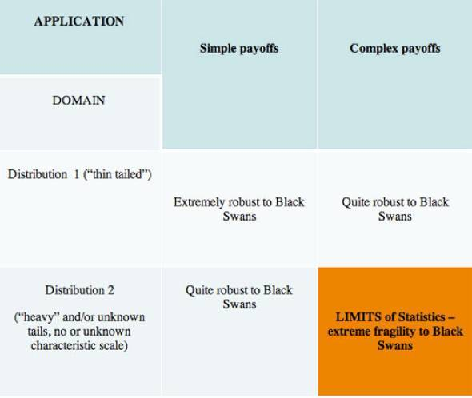
（塔勒布《黑天鹅》第四象限图）
上述这一切，和云计算有什么关系呢？ 我们觉得非常紧密，逻辑如下：
世界越来越数字化、更加“数目字可管理”- 一切效率更高。
本来就数字化的金融世界，日益是个“极端斯坦”，只能更快、更复杂，面临更多黑天鹅事件。
应对数字世界的黑天鹅，只能用数字世界的手段（而不是“人肉”手工方法），就像《黑客帝国》，你必须进入Matrix，用其中的武器和手段，去解决里面的问题（并影响外面）。
云计算，不过是世界数字化进程里的一步 �C 把承载数字世界的物理载体也进一步数字化，但是它刚好是我们应对数字黑天鹅的基本工具 �C 运算资源本身也是“数目字可管理”，并且正因为如此而可以是自动的和智能的。
即便到了今天，相信很多企业、机构的机房里的运算资源，依然不是“数目字可管理” �C 这本身真是一个讽刺。但直到云技术出现，才解决这个问题。结合云计算的技术，交易系统不再是“your grandmother‘s trading system”。
“反脆弱”的技术系统
黑天鹅事件是不可预测的，但是并非不可应对。《黑天鹅》的作者塔勒布，在其另一本有巨大影响力的著作《反脆弱》（Anti-Fragile）里，提到了如何在不确定中获益。这本闪烁着智慧之光的著作，早已超越了金融而进入到政治、经济、宗教、社会学的思考范畴，对IT系统技术架构的设计，同样具有启发意义。
想想，一个经常被黑天鹅事件光顾的交易系统，如果不仅没有坍塌、还随着每一次的考验而技术上变的越来越周全和强壮，这对于任何开发工程师、运维工程师来说，是不是一个梦想成真？
实际上，这个过程对于任何IT工程师而言都是非常熟悉的，因为我们中很多人每天的工作，可能就是在不断的以各种应急手段紧急救援不堪重负的生产系统、或者在线弥补技术缺陷，在这过程中我们发现一个又一个在开发和测试时没有发现的问题、一次又一次推翻自己在开发时的各种假设、不断解决所遭遇到的此前完全没有想象过的场景。如果项目、系统活下来了，显然它变得更加健壮强韧。
只不过，这一切是被动的、低效的、“人肉”的，而且视系统架构和技术而定，变强韧有时是相对容易的、有时则是不可能的 �C 正如一艘结构设计有严重缺陷的船，打更多的补丁也总会遇到更大的浪把它打沉。
如果基于《反脆弱》的三元论，也许大部分IT系统大致上可以这么看：
脆弱类：绝大部分企业IT系统，依赖于大量技术假设与条件，不喜欢无序和不稳定环境，暴露于负面“黑天鹅”中。
强韧类：小部分大规模分布式系统（也许通常是互联网应用），适应互联网相对不可控的环境（如网络延迟与稳定性、客户端设备水平和浏览器版本、用户量及并发请求变化），经受过海量用户与服务请求的磨练，相对健壮。
反脆弱类：能捕捉到正面“黑天鹅”- 系统不仅在冲击中存活，并且变的更加强韧，甚至在这过程中获益。
这里所谓的“脆弱”，并不是指系统不可靠、单薄、技术不堪一击，而是指这类系统厌恶变化、厌恶不稳定不可控环境、本身架设在基于各种稳定性假设前提的精巧设计上，无法对抗突如其来的、此前无法循证的事件（黑天鹅），更无法从中自适应和壮大。就这个角度看，证券行业甚至整个金融业里，大部分的系统可能都是脆弱系统。传统IT系统有以下一些常见的技术特点，例如：
一切以关系型数据库为中心（RDBMS-centric）。
很多历史遗留系统（legacy system）有数以百计的表、数以千计的存储过程。
业务逻辑高度依赖数据库。
中间层与数据层高度紧耦合。
多层架构（multi-tiered architecture），层与层之间依赖于高度的约定假设（协议-protocol、接口- API、数据格式 �C data format 等），并且这些约定经常来不及同步（例如某个团队改变了维护的接口而没有通知其他团队、或者数据库的表结构改变了但是中间层的对象库因为疏忽而没有及时步调一致的重构），有些约定甚至只存在于协作的开发者脑海中而没有形成文档（即便形成文档也经常因需求变化频繁而无法及时更新）。
应用程序依赖于某些第三方的代码库，而这些代码库很有可能依赖于某个版本的操作系统及补丁包，并且这种依赖关系是传递的 �C 例如某个第三方代码库依赖于另一个第三方代码库而该库依赖于某个版本的操作系统……
系统设计，往往没有考虑足够的失败场景（因此可能完全没有容错机制），没有考虑例如不稳定网络延迟对业务逻辑的影响（例如大部分企业系统都假设了一个稳定的LAN）。
组件、模块、代码库、操作系统、应用程序、运维工具各版本之间具有各种线性、非线性依赖关系，形成一个巨大的复杂系统。
然而，以下这些变化是任何IT系统所不喜欢却无法回避的，例如：
多层架构里，任何一个环节的约定独立发生细微改变，必定导致系统出错（只是严重性大小的差别），这几乎无法很好的避免 �C 研发团队的素质不够高、软件工程的水平低、瞬息万变的市场导致的频繁更改等，总是客观存在。
因为安全原因，需要对操作系统进行打补丁或者升级，导致应用程序所依赖的代码库发生兼容性问题 �C 在打补丁或升级后通过测试及时发现兼容问题已经算是幸运的，最怕是在生产环境运行过程中才触发非线性关系的模块中的隐患。
跨系统（尤其是不同团队、部门、组织负责的系统）的调用协议与接口发生变化，是一个常态性的客观事实。
互联网环境、甚至企业内部的网络环境，并不是一成不变的，网络拓扑出于安全、合规隔离、性能优化而变化，可能导致延迟、吞吐等性能指标的变化，应用系统本来没有出现的一些问题，有可能因为运行环境的变化而浮现，而系统内部容错机制往往没有考虑到这些问题。
业务需求永远在变，以数据库为中心的系统，不可避免产生表结构（schema）调整，系统升级需要做数据迁移，而这总是有风险的（例如data integrity需要保证万无一失）。
于是，传统IT对于这些系统的运维，最佳实践往往不得不这样：
在使用压力增大的情况下，最安全的升级手段是停机、换机器、加CPU、加内存，直到硬件升级、垂直扩容（vertical scale、or scale-up）手段用光。
维护一个庞大的运维团队，随时救火。
试图通过软件工程的管理，例如制定规章制度，让协作人员、团队之间在接口升级前走流程、互相通知，来避免随意的系统变化导致的风险。
加大测试力度 �C 通常很有可能是投入更多的人肉测试资源，以保证较高的测试覆盖率和回归测试（regression test）能力。
强调“纪律”，以牺牲效率为代价，通过“流程”、“审核”设置重重关卡以达到“维稳”效果。
重度隔离运维与研发，禁止研发人员触碰生产环境，减少误操作 �C 例如随意升级操作系统、对应用逻辑抱着侥幸心理打补丁等。
不可否定，这些“套路”在以往的时代可能是最佳实践，也体现了一个IT组织的管理水平。但是毫无疑问，这样研发、运维和管理的系统，是一个典型的“脆弱系统”，它依赖于很多的技术、工具、环境、流程、纪律、管理制度、组织结构，任何一个环节出现问题，都可能导致轻重不一的各种问题。
最重要一点，这样的系统，厌恶变化、喜好稳定，无法在一个“只有变化才是唯一不变”（并且是变化越来越频繁）的世界里强韧存活，更无所谓拥抱变化而生长。
强韧类的技术系统，情况要好的多，起码能“响应”变化（如后文所论述）。但是注意，在塔勒布的定义里，“强韧”并非“脆弱”的反面，“强韧系统”只是能相对健壮的对抗更大的压力、更苛刻的环境，它并不能从变化、不确定中获益。
“脆弱”的反面，塔勒布在现有语言里找不到一个合适的词语，所以他发明了一个新概念，“反脆弱”（Anti-Fragile）。问题是，接受“变化是一种常态”、拥抱变化并从中获益的“反脆弱”的技术系统，能被构建出来吗？
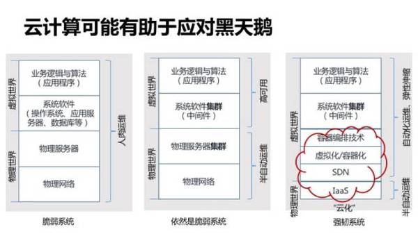
云计算的出现，有利于帮助IT构建强韧系统，并且让“反脆弱”系统成为可能。其最根本原因在于，云计算本身是机房物理设施数字化的过程，如上文所述，数字世界的黑天鹅 �C 微秒、纳秒内发生的极端事件，只能通过数字化手段才能高效解决。
伴随云计算出现的是DCOS（Data Center Operating System）、APM（Application Performance Monitoring）、Infrastructure As Code（基础设施即代码、可编程运维、可编程基础设施……）、DevOps等等技术方案、技术产品、技术理念和方法论。这些都是构建强韧系统的有力武器，而在云计算时代之前，它们严格意义上不曾存在过。
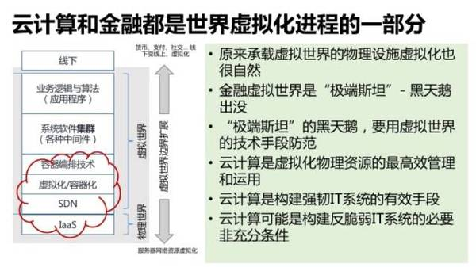
云计算也许是目前为止对于证券交易系统、甚至对于更广义的金融技术系统而言最适合应对黑天鹅的技术手段。监管机构不应该见到“云”字就敏感的与“公有云”、信息安全、交易可监管性等问题联系起来；金融机构则需要与时俱进的学习掌握“云化”的技术手段、架构思维 �C 至于系统是运行在公有云、私有云还是混合云，都已经是另一个故事。
容器技术的救赎
云计算，其中一个最基本目的，是计算资源的集合管理与使用。其实IT界在计算资源的集合使用方面，过去20年起码尝试过三次：
90年代中后期，出现网格计算（Grid Computing），用于蛋白质折叠、金融模型、地震模拟、气候模型方面的应用。
本世纪初，出现效用计算（Utility Computing）- 推行运算资源按需调用（On-demand）、效用计费（Utility billing）、订户模式（Subion model）的概念。IBM、HP、Sun这些IT公司都尝试推动过这个领域的解决方案，虽然成效不彰。
10年前，亚马逊AWS发布，算是云计算的标志性事件。云计算覆盖含义更广，网格计算可以是云计算平台上的一类应用，而效用计算则可以被视为云计算服务商所采用的商业模式。
云计算和大数据技术出现后，这些技术逐渐变身“事务型内存数据库”、“内存网格”（in-memory data-grid）、“流式计算平台”（stream processing）等，然总体来说变的越来越小众。
无论如何， 这些技术在云计算出现前已经帮助华尔街机构掌握了计算资源集合运用、分布式架构的一些理念和思维。而国内证券界甚至金融业IT总体来说，对这类技术是相当陌生的。
就对标华尔街同行的证券业IT而言，可以说基本上错过了上述计算资源集合应用的三个浪潮。云计算兴起后，OpenStack之类的技术在证券IT甚至金融界的成功落地、大规模采用的案例极其罕有（如果有的话）。
即便是近年来互联网云服务商兴起，部分金融机构因为试水互联网金融而开始使用公有云，很大程度上使用方式也不过是使用了一些虚拟机运行一些互联网边缘（Edge）服务。
然而这个时代有趣的地方在于，一些新技术的出现可以让“弯道超车”、“后发制人”成为可能 �C 上一个阶段错过了一些东西，但是也可能下一个阶段少了很多历史包袱从而可以轻易跳进最新的技术世代。容器，恰好就是这么一种技术 �C 假如你能把握的话。
在英语里，“容器”、“集装箱”、“货柜”都是同一个字 �C Container。容器技术之于软件业，很有可能可以类比集装箱对运输业的巨大影响。

实际上，确实有人想过把整个机房放在集装箱里，例如2006年Sun Microsystems推出的Project Blackbox――刚好是亚马逊发布AWS的同一年。但这个集装箱是钢铁的、有物理形体的、重量以吨为单位的；而其中的内容，自然也是各种物理的服务器、网络设备、发电机。那一年，可能谁也没有想到，10年后有一种“数字化”的虚拟集装箱大行其道。
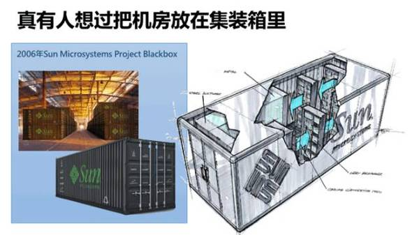
技术界不乏认为容器对软件技术产生革命性影响的观点，本人倾向于认同这种观点，因为：
容器影响开发者的开发方式、开发习惯，“强迫”他们去思考例如无状态的服务、业务逻辑粒度的控制、资源的弹性伸缩、应用代码的发布形态、系统里面每一个细节的可监控性等等。
让真正的DevOps成为可能 �C 自动化测试、持续集成（CI）、持续交付（CD）、自动化部署、无人值守的运维… 开发与运维的角色差异进一步缩小，而效率则最大程度提升。
让“不可变基础设施”（Immutable infrastructure）成为可能――这将颠覆传统软件系统的升级发布和维护方式。
为什么作为金融系统、交易平台的研发者，我们挑容器出现的时候跳进云计算，而在更早阶段虚拟机系列相关技术成熟时却并没有大的投入。
最根本原因在于，作为研发组织，我们从研发视角，基于具体应用场景去持续、积极寻觅能解决强韧性、健壮性问题的解决方案 �C 这是一种“Top-Down Thinking”，例如在交易量波动过程中，我们能否有自动化的技术去可靠的应对、实现计算资源的弹性伸缩并且保持超级高效？
有什么技术可以帮助我们解决复杂交易系统发布、升级、打补丁的危险和痛苦？交易故障出现时系统内部防止雪崩效应保持快速响应的“熔断”（circuit-breaker、fail-fast）机制有什么更规范的做法？用现有云计算的理论和技术倒着去套，显然是无解的，因为：
虚拟机级别的资源调度，太沉重，可编程接口太弱，无法“融入”到一个高性能运算（HPC �C High Performance Computing）的应用中。
仅仅为了资源的弹性伸缩，去引入一个第三方解决方案，例如一个PaaS（诸如CloudFoundry、OpenShift等），对于交易系统而言，代价太大、可控性太低、编程模型受入侵程度太高。
不是为了云计算而云计算 �C 一切“革新”需要合理、充分的应用理由，场景不符合，架构就不合理。
“Bottom-up Thinking”，即从基础设施的可管理、资源充分共享、运维更高效等角度去看问题，是一个典型的“运维”视角或者所谓CIO的视角，这种思考，关注的是TCO（Total Cost of Ownership）――成本的降低（IT在垂直行业一直被认为是一个成本中心 �C 在现在这个时代这是一个错误观点，但这是另一篇文章的讨论范围了）；可是和核心业务应用非常脱节。
对于一个传统行业尤其是受监管行业的IT而言，技术氛围往往是保守和审慎的，采用云技术这种在互联网界以外还很大程度被认为是“新生事物”的东西，并不是一件容易的事情：在行业繁荣、企业赚钱的时候，公司很可能并不关注运维除了稳定以外的事情 �C 包括用虚拟机还是用物理机、能否节省一点成本等等；
在市场不景气、公司亏钱的时候，IT却又需要以非常充分的数据来证明建立或者采用云平台能带来显著的大幅的成本节省效果，但是这往往首先涉及第三方软件的采购、机房的改造… 这本身就是一个巨大障碍。
所以，悲观一点的看， 很大一部分传统行业IT，很可能需要等到云技术成熟为新世代IT系统的标配，就像mainframe时代向client-server时代转变、client-server时代向多层架构/web技术时代切换，云技术成为一个主流的、企业决策者不再需要加以思索的事物（“no-brainer”）时，才会顺利进入企业世界。此时，运维的视角也许才能被充分接受。但是，对于以创新为本业的金融科技，那已经太迟。
早期的云技术，从运维视角去看是自然的，因为虚拟化技术最开始是把基础设施数字化的一个进程。容器化技术的出现，改变了这一切。容器天然与应用服务结合的更紧密、天然需要程序员的深度介入，“上帝的归上帝，凯撒的归凯撒”，容器里面的归程序猿（code monkey），容器外面的归运维狗（watchdog）――不一定对，只是作为笑话简单粗暴的类比一下，但想说明的是容器内外的关注点是不一样的、而运维与研发的协同则是深度的。
在Docker刚出现的时候，一直带着前述问题的我们，从其理念已经体会到容器技术对构建一个强韧交易系统的好处。
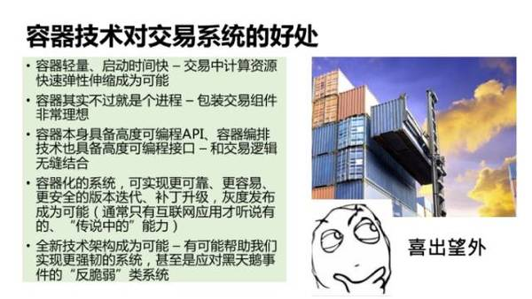
容器技术的到来，让我们在观念上“弯道超车”：
在软件安装、发布方面，我们还需要去学习、模仿Oracle、IBM们研发什么工具吗？不需要了 �C 采用容器、容器编排技术、容器镜像管理技术、容器目录（catalog），我们轻易的“一键发布”，而且谁都可以执行。
在打补丁方面，我们还要去参考Redhat开发个升级工具吗？没必要了，因为我们不打补丁，已经发布的容器里内容永远不会改变（Immutable），需要修复缺陷或者升级版本，我们就发布新容器 �C 发布组件乃至整个全新交易系统，成本都是很低的（并且必须永远维持那么低）。因此，我们也不一定需要什么中心化的、统一的、集中的可视化配置管理工具。
灰度发布、在线升级、多版本生产环境、回滚现在都是容器化系统天然自带的――因为整个系统的发布、部署是低成本的和快速高效的，只要有硬件资源就再发布一套，不行就切换回旧的那套 �C 技术界已经在不断总结最佳实践，总有一款套路适合你。
基于容器的微服务，天然支持多服务版本并存；对于回滚，数据库可能是个问题，但首先一切以数据库为中心就是个很有可能是错误的观念（当然，视应用场景而定），在分布式架构里，关系型数据库有可能不在系统关键路径上、事务有好些办法可以规避、通过很好的面向对象设计解耦内存与持久层的耦合… 实际上，经验告诉我们，关系型数据库被滥用是企业应用软件的通病。
而比解决运维问题更有趣的，是这几方面：
Infrastructure As Code �C 现在总算不是口号了，对着容器、容器编排技术进行编码，让“无人值守”、“智能运维”真正成为可能。虽然Puppet、Chef、Ansible这些技术早就存在，但是它们基本上仅限于操作基础设施的物理、虚拟资源，与一个专业应用系统通过API深度结合然后基于业务场景、系统业务指标来自我维护，是非常困难的。而容器，基本上只是一个进程，通过其API可以轻易深度整合到交易系统里。
容器技术出现后，也衍生出更多其他新兴技术，例如CoreOS、RancherOS、Unikernel。对于无止境追求极速性能的交易系统，交易软件到底层硬件之间的耗损越少越好，这和我们所遵循的mechanical sympathy技术理念完全一致。
类似Unikernel这样的所谓“library OS”非常有趣，因为整个操作系统萎缩成一系列的基础库，由应用软件直接调用以便运行在裸机（bare metal）上。想象一个超级轻量的交易中间件，无缝（真正意义上）运行在裸机上的毫无羁绊裸奔的“爽”…
在广发证券IT而言的所谓“弯道超车”，其实更包括几方面的含义：一是观念上的，颠覆传统软件研发的思维，不必要去做追随者；二是技术成长方面的 �C 虽然有些技术如Unikernel并未成熟到可以真正运用，但是两三年前的Docker不也一样吗？重要的是团队和一个革命性技术的共同成长，前瞻性技术的研发投入终将回报（capitalize）；
三是实际效果上的，虽然在云计算发力的前几年，我们并未投入到IaaS、PaaS的“基建”，但是从容器化入手，忽然间就获得了一定的“计算资源集合使用”的能力 �C 此前只有技术实力较强的科技企业能做Grid Computing。
在证券业，我们不是孤独者。 华尔街投行的表率高盛，今年2月份宣布了他们一年内把90%的运算能力容器化的计划。
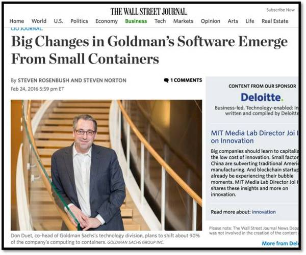
时至今天，在Docker已经被团队广为接受、被应用到各种业务系统中去的时候，我们从两个方向同时继续推进容器化技术：
第一个方向，继续沿用上文所述的“Top-Down”思路，基于业务场景、具体应用需要，把容器（Docker）、容器编排管理（Rancher）的技术深度整合到交易系统中去，让其获得自伸缩（elastic）、自监控（self monitor）、自修复（self-healing）的自动化能力 �C 这是“反脆弱”系统的一个必要非充分条件。
至于什么时候伸缩、什么时候自修复、如何学习自己的运行行为以作自我调整、如何把低级的系统指标换算成业务级别的性能指标作为自己的健康“血压计”… 这些是需持续学习挖掘、测试验证的东西。
第二个方向，是上文所述的“Bottom-Up”思路，采用例如Kubernetes建立起一个多租户的CaaS（容器即服务）平台，支持非交易的应用系统（例如电商平台、机器人投顾服务、CRM等等）的跨云（公有云、私有云、传统机房）容器化。
软件工程没有银弹
99年图灵奖获得者Fred Brooks（也就是Brooks’ law的发现者：“往一个已经延误的项目里加人力资源，只能让那个项目更延误”）说过， 软件工程没有银子弹。
在各种标榜“云”的科技公司层出不穷的今天，其实依然还没有任何“黑科技”帮阁下把你的脆弱系统瞬间变成一个强韧系统甚至一个具备反脆弱能力的系统。所以，容器技术也不过是一个也许必要但不充分的有用工具而已。
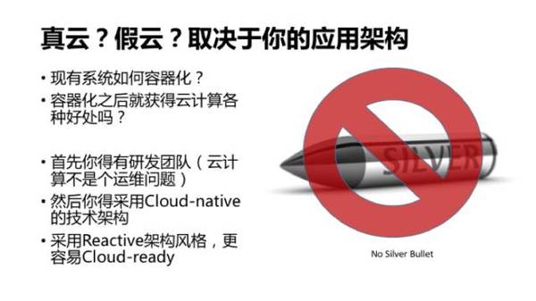
能否释放云计算的威力，取决于很多因素。到一个公有云上使用几个虚拟机，也算一个小小的进步，毕竟它可能（1）缩短了一些传统企业采购硬件、机器上架等等的周期；（2）帮不擅长互联网技术的传统企业解决一部分“互联网最后一公里”问题。然而，这只不过是使用了一些虚拟化基础服务，如果部署在上面的系统本身是一个脆弱系统，那么它在云上依然是一个脆弱系统。
实现一个强韧甚至反脆弱的技术系统，你首先得有一个恰当的技术架构，而实现这样的技术架构，你首先需要有研发团队 �C 不错，个人观点是，在现阶段如果不具备软件研发能力，那么你的组织其实无法真正利用、享受到云技术带来的福利。
怎样的架构才能利用和释放云计算能力？
首先，架构设计需要遵循Reactive（响应式）原则（根据“响应式宣言”）：
Elasticity �C 弹性响应系统负载变化，基于实时性能监控指标以便通过预测性（predictive）和响应性（reactive）算法来对系统进行扩容。
Resiliency �C 通过复制（replication）、包容（containment）、隔离（isolation）和委托（delegation）等机制，保障在故障发生时系统能继续高度可用。
Responsive �C 系统及时探测侦察问题并解决问题，保障对外的及时响应。
Message-driven �C 采用消息驱动的、非堵塞的异步通讯机制，降低系统内部组件模块间的耦合度，提升吞吐量。
其次，在技术研发过程中，我们采用一系列的所谓“Cloud-native patterns”（原生，或者说“天然”的云计算架构模式）来实现我们的系统，以便让系统达到Cloud-ready（具备云感知能力 �C 借用IBM与Intel相关中文版论文的概念）。
此外，“云感知”和上述“响应式”原则，是完全一致的，云感知也关注“故障恢复能力”、“延迟恢复能力”、“扩展的灵活性”。事实上，在一流的金融IT团队里，这些原则、实践要求，从来都是被遵循的，因为金融的应用系统天然需要这些能力。无论是否在云计算时代，这些原则、要求均非常合理。
那么 容器化技术在这其中有什么作用呢？实践告诉我们，作用很大。最重要一点是，很多pattern的具体技术实现，可以挪到容器层面去处理。例如Circuit-breaker和Fail-fast这类模式，过去的做法，是各个具体的服务，采用自己的技术工具（例如Node.js的守护进程PM2）和办法，基于开发者自己的理解，各自实现。
容器化的好处，是把复杂系统里一切异构的技术（无论以Go、Java、Python还是Node.js实现）都装载到一个个的标准集装箱里，然后通过调度中心基于各种监控对这些集装箱进行调度处理。也就是说，Cloud-native的架构模式，有不少是可以在容器编排调度与协同的这一层实现的。
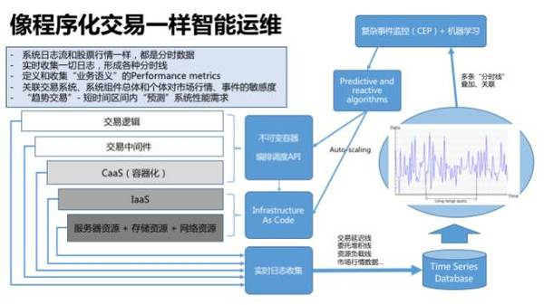
DevOps：云计算时代的方法论和文化
南怀瑾在某本著作里举过一个剃头匠悟道的例子 �C 无论何种行业，技艺追求到极致可能悟到的道理都是共通的。《黑天鹅》和《反脆弱》的作者塔勒布本人也许算的上是这样的一个触类旁通的好例子 �C 由金融而“悟道”于哲学（起码被称之为本世纪有影响力的思想家之一）。
IT领域不知道有无类似的人物，诸如面向对象设计、架构设计模式、敏捷开发领域的大师级人物Martin Fowler等，显然是抽象思维特别强的人，能够对复杂的技术世界进行“模式识别”而作出一些深刻思考。
在技术世界里，我们一向强调方法论，可是有时候也需要形成“世界观”、“信仰”。在无数次的项目危机管理、技术故障攻坚、运维救火之后，IT人也许应该对“世间唯一不变的是变化本身”有深刻体会，从而接受“拥抱不确定”的观念。
IT界面对变化与不确定性的态度，这十多年来看也是一个有趣的演变：
直到本世纪初，很多项目管理及软件工程的方法论，依然强调所谓的“Change management”（变更管理），通过组织（“变更委员会”）、流程来“管理”业务系统需求方不断提出的需求管理，视需求变化为项目延误、系统不稳定的根源，以项目“按时”交付为终极目标，可以说这些方法论本质上“厌恶“变更。
互联网风起云涌后，出于应对瞬息万变的激烈竞争、在线高效运营的刚需，接受“需求变化是常态”、对变更友好的“敏捷”（Agile）方法被自然而然引入到日常项目中，成为过去十年的主流方法论，并且终于把传统企业IT牵引其中（例如广发证券IT启动金融电商系列项目研发前的第一件事就是先把敏捷实践建立起来 �C 对口的方法论才可能带来对的结果）。
然而，绝大部分企业的敏捷实践都局限在垂直业务线的项目团队里，而运维作为一个维护全企业IT生产资源的横向平台型组织，通常被排除在敏捷实践之外。
敏捷迭代方法解决得了业务需求变更的问题，解决不了系统上线后各种突发性的变化 �C 故障的及时解决、版本的迅速更新（业务部门总是迫不及待的）、在线经营的瞬间生效（运营人员分分秒秒催着）…
在一切都嫌慢的“互联网时间”里，运维貌似成为最后掉链的一环，以“稳健”为主导的运维团队与“进取”的研发、运营团队无可避免产生冲突
时至今天，随着“把基础设施数字化”的云计算的普及，一个新的方法论 �C DevOps，闪亮登场。之所以说这是一个方法论，是因为它绝不仅仅是“Dev + Ops”这样简单粗暴的把开发工程师和运维工程师捆在一起，用“同一个项目组”、“同一套KPI”来强迫他们分享“同一个梦想”了事。
它是在APM（应用性能监控）、Infrastructure As Code（可编程运维）、Virtualization（虚拟化）、Containerization（容器化）等等这些云计算时代的产物出现后，基于新的技术工具、技术理念而自然产生的。
持续集成（Continuous Integration）、持续交付（Continuous Delivery）、持续运维（Continuous Operation）是DevOps的具体环节和手段，它相当于把一条纯数字化链路上不同的参与者关联到一起 �C 无论是开发工程师还是运维工程师，最终都不过是身份稍微差异的Information worker。
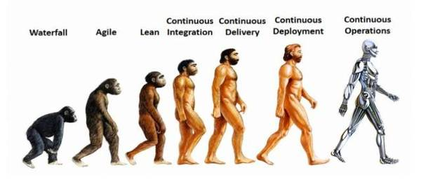
DevOps可能不仅仅是个概念、方法论、技术新名词，它是伴随云计算自然发生的。但它的接受与运用，对于传统企业的IT，尤其是“维稳”为主导思想的受监管行业的IT，可能是一种文化冲击。
传统IT甚至是今天的很多技术相对前沿的互联网公司，依然把团队拆分成“运维”、“开发”，在组织结构层面建立相互制衡，以避免开发团队的“冲动冒进”导致生产系统的不稳定，但运维职能往往变成一种“权力”（privilege）- 系统的迭代更新都需要获得运维“审批”，这本身显然就是一个“脆弱系统”，因为对变更是绝不友好的。在技术进步、时代变迁的大环境下，这种过去合理的做法，早晚变成一个将要被颠覆的存在。
无论如何，我们认为割裂的讨论一个高性能运算（HPC）的技术系统（如证券交易系统）的容器化、“云化”是不够的，DevOps是构建“反脆弱”技术系统的方法论（起码到目前为止。也许将来有新的思维出现），也是我们系统能力的天然一部分。
结语
我们 从软件研发的视角、证券交易的视角来看待云计算，深感把促进基础设施数字化、运维代码化的容器化技术，运用到交易系统技术中，是天作之合 �C 假如运用得当的话，结合机器学习和智能算法，能帮助我们构建一些“反脆弱”的技术方案（既然有能下围棋的阿尔法狗，我们是否也可以开始憧憬懂得自救的运维狗？）。
可以看到的潮流脉络是， 世界是越来越数字化的、变化是越来越频繁的、而IT是需要拥抱变化的，云计算则只是这个潮流里完全符合趋势而自然出现的技术阶段。
有一天Oracle、SAP、各种著名与非知名的专业软件都把它们自身的产品基于容器来构建（例如一个多进程组成的数据库实例里的进程各自运行在自己的容器中），也许对于行业监管者、企业技术决策者而言，云已经无需概念上的存在，而能被毫无质疑的接受。
但是这一天到来之前，大部分企业也许可以先尝试调整一个对云服务友好的财务制度 �C 项目立项的时候，硬件预算按CPU核数、内存量、存储量来报算，有形的物理机器不再作为资产稽核到各条业务线各个项目组，一切物理硬件归IT。制度和文化，往往才是隐形的决定因素，不是吗？
「ArchSummit 北京 2016」12月年底技术嘉年华，阿里云研究员褚霸、Go基金会主席谢孟军、饿了么框架工具部研发总监兰建刚、腾讯毫秒服务引擎技术负责人杨宇将带我们去看架构从0到1，从1到100的进化之路。 8折限时优惠，现在报名立减千元，点击“阅读原文”了解大会更多精彩！
��
延展阅读（点击标题）：
喜欢我们的会点赞，爱我们的会分享！
我来说两句排行榜